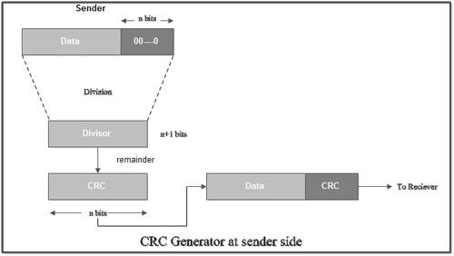
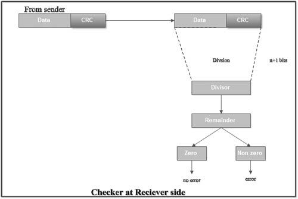
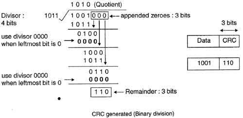
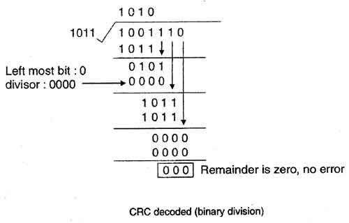

The various steps followed in the CRC method are
1. A string of n as is appended to the data unit. The length of predetermined divisor is n+ 1.
2. The newly formed data unit i.e. original data + string of n as are divided by the divisor using binary division and remainder is obtained.
This remainder is called CRC.

3. Now, string of n Os appended to data unit is replaced by the CRC remainder (which is also of n bit).
4. The data unit + CRC is then transmitted to receiver.
5. The receiver on receiving it divides data unit + CRC by the same divisor and checks the remainder.
6. If the remainder of division is zero, receiver assumes that there is no error in data and it accepts it.
7. If remainder is non-zero then there is an error in data and receiver rejects it.
For example, if data to be transmitted is 1001 and predetermined divisor is 1011. The procedure given below is used:
1. String of 3 zeroes is appended to 1011 as divisor is of 4 bits. Now newly formed data is 1011000.

1. Data unit 1011000 is divided by 1011.

2. During this process of division, whenever the leftmost bit of dividend or remainder is 0, we use a string of Os of same length as divisor.
Thus in this case divisor 1011 is replaced by 0000.
3. At the receiver side, data received is 1001110.
4. This data is again divided by a divisor 1011.
5. The remainder obtained is 000; it means there is no error.

CRC can detect all the burst errors that affect an odd number of bits.
The probability of error detection and the types of detectable errors depends on the choice of divisor.
Thus two major requirement of CRC are:
(a) CRC should have exactly one bit less than divisor.
(b) Appending the CRC to the end of the data unit should result in the bit sequence which is exactly divisib